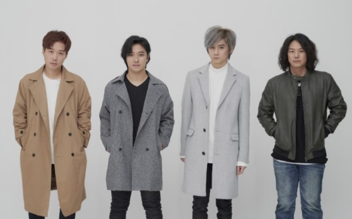

Nemesis
멤버소개
1집 La Rose de Versailles
2집 Lovesick
3집 Part. 1 The Piano
3집 Part. 2 Dream
4집 White Night

미성의 고음을 가지고 있으면서도 때론 거칠고, 때론 눈물 나는 애절함을 표현하는 보컬 노승호
앨범 전곡을 작곡하고 기타, 피아노, 스트링, 신디사이저 등을 직접 연주하고 녹음한 기타,피아노 하세빈
뛰어난 리듬감과 재기발랄한 어프로치로 개성을 부여하는 베이스 최성우
강렬하고 파워풀한 드럼으로 독보적인 팀 색깔을 확립하는 드럼 정의석